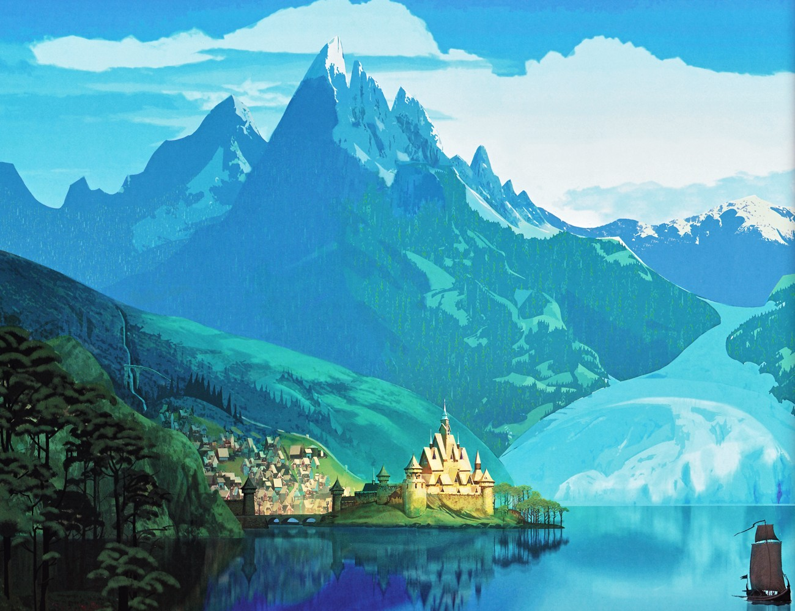
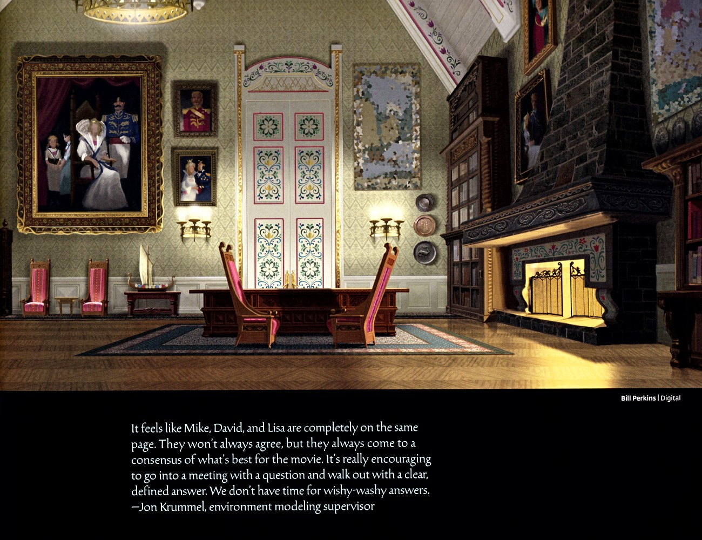
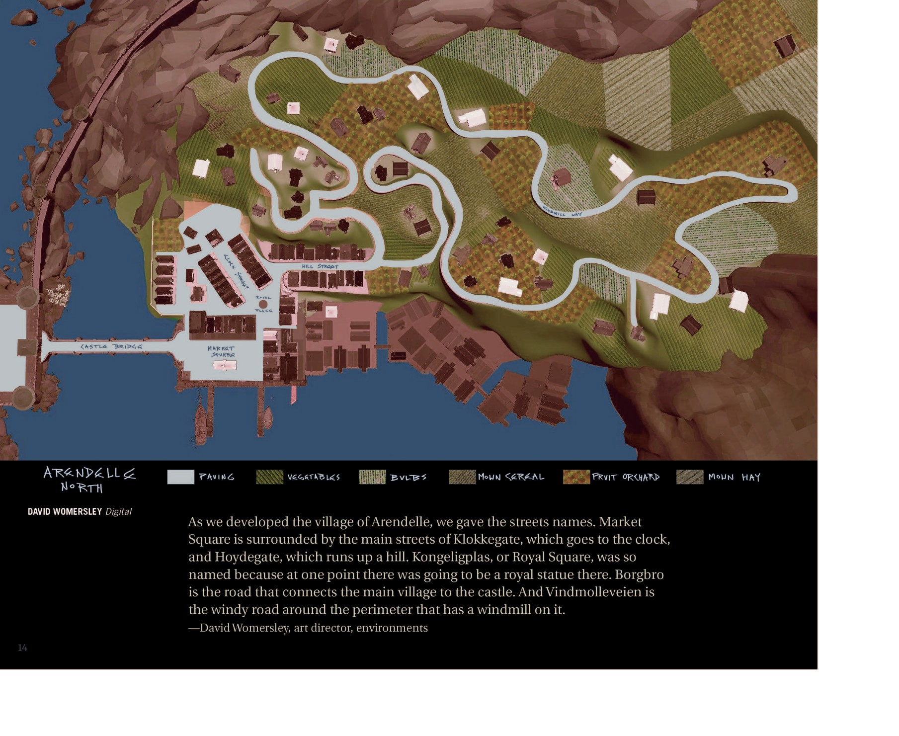
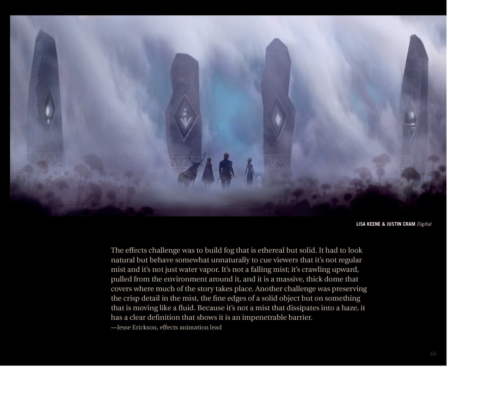
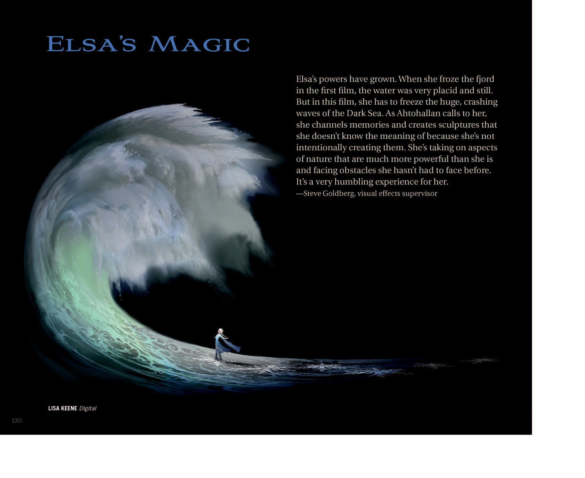
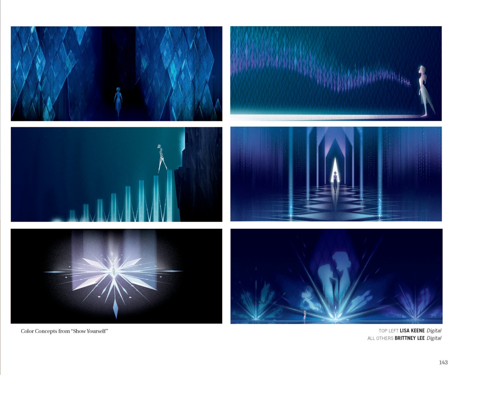

🎨 图鉴 · 场景图鉴
场景图鉴
从峡湾到冰川
6
本卷页数
🖼️
图鉴
中/英
双语
🏰 场景图鉴
场景图鉴
阿伦黛尔、冰雪王座厅、魔法森林、阿塔霍兰——官方设定集里的场景概念画档案。
10+
场景
13
概念画
2部
电影
原书
逐页核对
🏰 《冰雪奇缘》的世界从阿伦黛尔的峡湾王国到魔法森林的古老密林，从冰雪王座厅到阿塔霍兰的冰川。本图鉴收录官方设定集中的场景概念画——每一张都标注了它在创作史中的位置与设计论述。
🏰 阿伦黛尔王国

阿伦黛尔王国全景油画
满版彩色油画描绘峡湾深处的阿伦黛尔：雪峰、欧式建筑与金顶城堡，右下角红帆船点出王国的海上身份——整部影片王国气氛与配色的定调之作。

木板教堂与城堡设计
艺术团队被挪威12世纪木板教堂震撼；Giaimo 盛赞 Womersley 的城堡「像城堡，但屋顶线条与细节戏仿木板教堂」——这一混合塑造了阿伦黛尔的建筑性格。

加冕大厅内景概念
Bill Perkins 绘制的加冕大厅内景：旗幡、光窗与涌动的人群——加冕日是艾莎「最后一次正常的公开露面」。

阿伦黛尔秋季全景
David Womersley 绘制的官方全景：城堡坐落于海湾小岛、桥梁连接两岸，秋日彩林与雪山环绕——这是F2中阿伦黛尔的「定妆照」。

阿伦黛尔城镇地图
「Arendelle North」俯瞰地图与街道命名：钟楼街 Klokkegate、高地街 Hoydegate、皇家广场 Kongeligplas、城堡桥 Borgbro、风车路 Vindmolleveien——小镇第一次拥有真实的历史感。
🏔️ 北山与冰雪王座厅

雪花冰宫立面设计
以雪花六边结构为灵感的冰宫立面研究——Giaimo 与团队「在自然本身中」找到冰宫王座厅的形态，每一根冰柱都遵循冰晶的生长逻辑。

冰宫内景与冰之材质
Julia Kalantarova 的冰宫王座厅概念画，配 Jim Finn / Cory Loftis / Dan Lund 的冰材质论述：自然之冰与艾莎的魔法之冰必须同样可信——「深冰是浓蓝的，薄冰是灰白的」。

雪原美术论述
Giaimo：「雪不只是白色，它是画布。」雪山概念画配雪景美术论述——全片的白色都有色彩倾向：日出暖桃、日落粉蓝、月光靛紫。
🌲 魔法森林与四灵之地

魔法森林 · 雾之穹顶
Lisa Keene 笔下安娜面对翻涌如「水墙」的迷雾：雾是真水粒子，却带着从紫到青的微妙彩色——每个元素的代表色都映在其中。

迷雾石阵
Lisa Keene 与 Justin Cram 绘制的魔法森林石阵迷雾图（F2原书页65）：特效论述迷雾如何像「活物」一样呼吸与流动。

秋日河谷概念图
F2秋色概念画：橙红森林环抱静谧河谷，紫雾与倒影构成「秋=成熟」的色彩主题——F2全片秋日调色板的代表画面。

大地巨人章节扉页
「半角色半环境」的大地巨人：直接从崖面生长出来的岩石身躯，四肢故意做得长短不一，根系作为关节的连接组织。
🌊 暗海与阿塔霍兰

「Elsa's Magic」章节扉页
Lisa Keene 的暗海巨浪画：特效总监 Steve Goldberg 论述F2艾莎魔法的升级——从F1冻结平静峡湾，到F2直面狂暴暗海，是她最谦卑的一课。

阿塔霍兰章节扉页
深蓝冰柱群立绘中，小小的艾莎立在冰下作比例参照。特效总监 Marlon West 阐释核心规则：记忆图像实体存在于冰内、随艾莎的凝视实时成形——「这是个会变得友善的奇怪之地，但她走得太远了。」

「Show Yourself」色彩概念
Lisa Keene 与 Brittney Lee 的六格色彩概念：菱形冰壁、光柱阶梯与雪花显圣——「展示你自己」段落的视觉交响总谱。
💡 场景的象征意义
在《冰雪奇缘》中，场景不仅是故事发生的背景，更是象征的载体：冰宫象征自由与孤立，魔法森林象征未知与成长，阿塔霍兰象征记忆与真相。场景的变化与角色的成长同步推进。
📌 本页要点
本页核心要点：①🏰 阿伦黛尔王国；②🏔️ 北山与冰雪王座厅；③🌲 魔法森林与四灵之地；④🌊 暗海与阿塔霍兰。来源：电影正典、官方设定集与官方小说综合梳理。